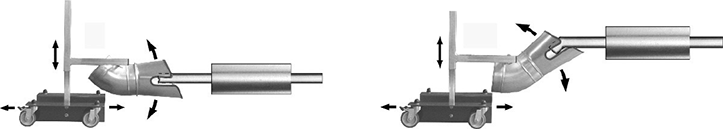
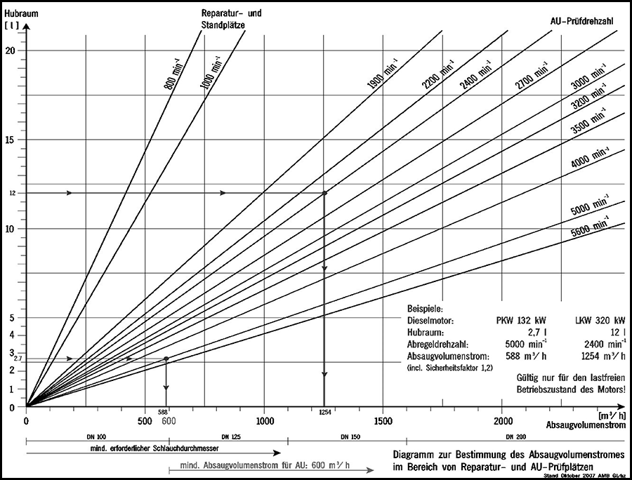

Anhang 1 dieser TRGS enthält Handlungsempfehlungen für spezielle Arbeitsbereiche und Tätigkeiten, die im Rahmen der Gefährdungsbeurteilung nutzbar sind. Dieser Anhang soll eine Erleichterung für die Betriebe im Einzelfall sein, beschreibt Mindestmaßnahmen und unterstützt den Arbeitgeber beim Schutz der Beschäftigten.
Die in diesem Anhang aufgeführten Arbeitsbereiche und Tätigkeiten sind so beschrieben, dass gemeinsam mit dem Hauptteil dieser TRGS der Schutz der Beschäftigten gegenüber Abgasen von Dieselmotoren gewährleistet wird.
1 Betrieb von Flurförderzeugen
2 Bergbau unter Tage
3 Bauarbeiten
4 Ladehallen, Laderampen, Ladestellen, Abkippstellen
5 Werkstätten/Prüfstellen von Überwachungsorganisationen
6 Abstellbereiche
(1) Vor der Neuanschaffung von Flurförderzeugen, die in ganz oder teilweise geschlossenen Arbeitsbereichen betrieben werden sollen, ist vom Arbeitgeber zu prüfen und zu dokumentieren, ob die Substitution von dieselbetriebenen Flurförderzeugen möglich ist. Die Auswahl der zu beschaffenden Flurförderzeuge soll unter folgender Rangfolge erfolgen:
(2) Ausnahmen, die die Wahl der Beschaffung nach Nummer 2 oder 3 Absatz 1 dieser TRGS begründen, sind:
(3) Ist der Einsatz von dieselbetriebenen Flurförderzeugen in ganz oder teilweise geschlossenen Arbeitsbereichen notwendig, ist die Exposition durch Schutzmaßnahmen nach Nummer 4 dieser TRGS zu minimieren. Ist der Einsatz von gasbetriebenen Flurförderzeugen in ganz oder teilweise geschlossenen Arbeitsbereichen notwendig, sind analoge Schutzmaßnahmen in Anlehnung an Nummer 4 dieser TRGS festzulegen.
(1) Tätigkeiten im Bergbau unter Tage im Sinne dieser TRGS sind Tätigkeiten unter Tage gemäß § 2 Bundesberggesetz.
(2) Die Arbeitsbereiche sind so zu gestalten, dass die jeweils gültigen AGW eingehalten werden. Hierbei ist das Minimierungsgebot zu beachten.
(3) Bis zum Nachweis der Einhaltung der AGW durch Arbeitsplatzmessungen ist für jeden Dieselmotor mindestens eine Frischwettermenge von 3,4 m3/(min * kW) im jeweiligen Arbeitsbereich zuzuführen. Jedes mit Dieselmotor betriebene Arbeitsmittel muss an gut sichtbarer Stelle entsprechend seiner installierten Motorleistung mit der erforderlichen Frischwettermenge in m3/min gekennzeichnet werden.
(4) Die belasteten Wetter sind auf möglichst kurzem Wege in den Abwetterstrom abzuführen.
(5) Bei der wettertechnischen Planung von Betriebspunkten sind Vorbelastungen oder Querbeeinflussungen, z. B. durch Sprengschwaden oder Methan, vorab zu berücksichtigen.
(6) Insbesondere in sonderbewetterten Grubenräumen ist durch Auslegung der Wetterführung zu gewährleisten, dass sich aufgrund der Relativbewegung von Fahrzeugen zum Wetterstrom Gefahrstoffe nicht aufkonzentrieren können.
(7) Abgasmessungen an Dieselmotoren sind im Bergbau unter Tage abweichend von den Fristen in Anhang 2 Absatz 1 nach
durchzuführen.
3.1 Bauarbeiten im Freien
(1) Bauarbeiten im Freien im Sinne dieser TRGS sind Arbeiten, die
durchgeführt werden.
(2) Werden dieselbetriebene Maschinen und Fahrzeuge bei Bauarbeiten im Freien eingesetzt, werden die AGW für Abgase von Dieselmotoren eingehalten (siehe Expositionsbeschreibung "Expositionen gegenüber Dieselmotoremissionen (DME) von Baumaschinen und -fahrzeugen" [10]).
3.2 Bauarbeiten in ganz oder teilweise geschlossenen Arbeitsbereichen
(1) Bauarbeiten in ganz oder teilweise geschlossenen Arbeitsbereichen im Sinne dieses Abschnitts dieser TRGS sind Arbeiten, die
durchgeführt werden.
(2) Werden dieselbetriebene Maschinen oder Fahrzeuge bei Bauarbeiten in ganz oder teilweise geschlossenen Arbeitsbereichen eingesetzt, müssen diese zur Einhaltung des AGW für Dieselrußpartikel mit einem DPF ausgerüstet sein. Wenn der Nachweis erbracht wird, dass der AGW eingehalten wird, dürfen mobile Maschinen ab der Abgasstufe IV auch ohne DPF betrieben werden. Kommen Fahrzeuge mit Straßenzulassung zum Einsatz, kann bei Motoren ab der Abgasstufe EURO fünf auf weitere Maßnahmen zur Abgasnachbehandlung verzichtet werden.
(3) Bei der Überschreitung der AGW der gasförmigen Komponenten der Abgase von Dieselmotoren (insbesondere NO und NO2) sind in ganz oder teilweise geschlossenen Arbeitsbereichen lufttechnische Maßnahmen erforderlich.
(4) Bei Maschinen, die nicht bewegt werden, wie z. B. Betonpumpen oder Stromerzeuger, können alternativ die Abgase am Auspuff erfasst und ins Freie abgeleitet werden.
(5) Bei Verdichtungsarbeiten in mehr als schultertiefen Gräben und grabenähnlichen Arbeitsräumen ist der Einsatz von Anbauverdichtern, ferngesteuerten Geräten, Geräten mit emissionsfreien (Elektro- oder Akkuantrieb) oder emissionsarmen (gasbetriebene Geräte oder benzinbetriebene Geräte mit Katalysator, siehe auch "Empfehlungslisten für Rüttelplatten und Stampfer in tiefen Gräben" [11]) Antriebstechniken zu prüfen. Ansonsten sind vorrangig dieselbetriebene handgeführte Verdichtungsgeräte – soweit am Markt verfügbar – mit DPF einzusetzen.
(6) Sind die Maßnahmen nach Absatz 5 nicht möglich, ist Atemschutz zu tragen.
3.3 Bauarbeiten unter Tage
(1) Bauarbeiten unter Tage im Sinne dieser TRGS sind Bauarbeiten zur Erstellung unterirdischer Hohlräume in geschlossener Bauweise sowie deren Ausbau, Umbau, Instandhaltung und Beseitigung, soweit nicht das Bundesberggesetz gilt. Zu den Bauarbeiten unter Tage zählen z. B. Stollenbau-, Tunnelbau- (auch in Deckelbauweise), Kavernenbau- und Schachtbauarbeiten sowie Durchpressungen.
(2) Bei Bauarbeiten unter Tage muss zur Bewetterung eines jeden Arbeitsbereiches, in dem Dieselmotoren eingesetzt werden, eine Frischluftmenge von 4,0 m3/min je eingesetztem kW (Nennleistung) zugeführt werden. Für die Bemessung der Bewetterung ist dabei die Summe der Nennleistungen der maximal gleichzeitig unter Tage beim Lösen, Laden und Fördern sowie Betontransport eingesetzten dieselbetriebenen Maschinen und Fahrzeuge in Ansatz zu bringen. Die Expositionen gegenüber Stickoxiden im konventionellen Tunnelbau werden in einer gesonderten Expositionsbeschreibung [12] dargestellt.
(3) Grundsätzlich müssen alle bei Bauarbeiten unter Tage eingesetzten Dieselmotoren mit einem DPF gemäß Nummer 4.2.2 dieser TRGS ausgerüstet bzw. Nummer 4.2.3 dieser TRGS nachgerüstet sein. Wenn der Nachweis erbracht wird, dass der AGW für Dieselrußpartikel eingehalten wird, dürfen mobile Maschinen ab der Abgasstufe IV auch ohne DPF betrieben werden.
(4) Maschinen, deren Arbeitsgeräte ausschließlich elektrisch betrieben werden, z. B. elektrisch betriebene Bohrwagen, Spritzmobile, Teilschnittmaschinen, Hebebühnen, benötigen für den dieselbetriebenen Fahrmotor keinen DPF. Des Weiteren können, sofern der Nachweis der ausreichenden Belüftung nach Absatz 2 erbracht wird, je Arbeitsbereich folgende Dieselmotoren ohne DPF betrieben werden:
(5) Abgasmessungen an Dieselmotoren sind bei Bauarbeiten unter Tage abweichend von den Fristen in Anhang 2 Absatz 1 nach
durchzuführen.
(6) Sämtliche untertägig errichteten Pausen- und Bereitschaftsräume sind mit einer ausreichenden Frischluftzufuhr auszustatten. Nahrungsmittel dürfen nur in Räumen nach Satz 1 aufgenommen werden.
3.4 Gleisbauarbeiten in fertiggestellten Tunnelbauwerken
(1) Gleisbauarbeiten in fertiggestellten Tunnelbauwerken im Sinne dieser TRGS sind Arbeiten zur Herstellung oder Instandhaltung des Gleisoberbaues, unabhängig von der Art des Oberbaues (Schotteroberbau oder feste Fahrbahn) und der eingesetzten Maschinentechnik.
(2) Werden dieselbetriebene Maschinen oder Eisenbahnfahrzeuge bei Gleisbauarbeiten in fertiggestellten Tunnelbauwerken eingesetzt, müssen diese mit einem gemäß Nummer 4.2.3 dieser TRGS zertifizierten DPF ausgerüstet sein. Dieses gilt auch für den Einsatz von Maschinen oder Eisenbahnfahrzeugen deren Dieselmotoren eine Nennleistung > 560 kW aufweisen.
(3) Wenn der Nachweis erbracht wird, dass der AGW für Dieselrußpartikel eingehalten wird, dürfen dieselbetriebene Maschinen und Eisenbahnfahrzeuge mit der Abgasstufe IV ohne DPF betrieben werden. Kommen Zweiwegefahrzeuge mit Straßenzulassung zum Einsatz, kann bei Motoren ab der Abgasstufe EURO fünf auf weitere Maßnahmen zur Abgasnachbehandlung verzichtet werden.
(4) Zur Einhaltung der AGW der gasförmigen Komponenten der Abgase von Dieselmotoren (insbesondere NO und NO2) ist eine technische Belüftung erforderlich. Für die Bemessung ist ein rechnerischer Nachweis [13] zu führen. Dabei sind die nachfolgenden Vorgaben zu berücksichtigen:
(1) An- und Abfahrten sind auf kürzestem Weg und ohne unnötiges Rangieren vorzunehmen. Sofern der Motor nicht benötigt wird, ist dieser nach Erreichen der Lade- bzw. Abkipp-Position abzustellen.
(2) Bei An- und Abfahrten von Fahrzeugen an Laderampen, die sich an der Außenseite von Hallen befinden, ist sicherzustellen, dass Abgase von Dieselmotoren nicht in die Halle gelangen können. Dies kann z. B. bei Andockstationen durch Schließen der Ladetore während des Rangiervorganges erfolgen, auch wenn die Ladetore konzeptionell der Frischluftversorgung dienen.
(3) Das Auffüllen von Druckluftbremsanlage abgestellter Fahrzeuge vor der Ausfahrt darf nur durch ein externes Druckluftversorgungssystem oder bei laufendem Motor mit Abgasabsaugung erfolgen.
(4) Bei der Neuanlage oder beim Umbau von stationären Laderampen/Ladestellen/Abkippstellen sind die An- und Abfahrtbereiche so zu konzipieren, dass
5.1 Allgemeines
(1) Werkstätten im Sinne dieser TRGS sind ganz oder teilweise geschlossene Arbeitsbereiche, in denen Maßnahmen zur Instandhaltung von Dieselmotoren oder von mit Dieselmotoren betriebenen Maschinen (z. B. Geräte, Aggregate, Fahrzeuge, Flurförderzeuge) durchgeführt werden.
(2) Prüfbereiche können sowohl in Werkstätten als auch in Prüfstellen von Überwachungsorganisationen vorhanden sein.
(3) Maßnahmen zur Instandhaltung im Sinne dieser TRGS sind alle Maßnahmen zur Bewahrung des Soll-Zustandes (Wartung), zur Feststellung und Beurteilung des Ist-Zustandes (Inspektion, Untersuchung der Abgase/Motormanagement-/Abgasreinigungssystems als Teil der HU gem. § 29 und Anlage VIII a StVZO) und zur Wiederherstellung des Soll-Zustandes (Instandsetzung).
(4) An- und Abfahrten zu den Arbeitsständen sind auf kürzestem Weg vorzunehmen. Unnötiges Rangieren ist zu vermeiden.
5.2 Instandsetzungsbereiche
(1) Instandsetzungsbereiche im Sinne dieser TRGS sind Arbeitsbereiche in Werkstätten, in denen Instandsetzungsarbeiten durchgeführt werden.
(2) Arbeitsstände, an denen Arbeiten bei laufendem Dieselmotor durchgeführt werden, müssen mit Abgasabsaugungen ausgerüstet sein.
(3) Die Zuordnung der instandzusetzenden Fahrzeuge und mobilen Maschinen zu den einzelnen Arbeitsständen im Arbeitsbereich ist so vorzunehmen, dass unnötige Rangierfahrten vermieden werden.
(4) Hat die Druckluftanlage des Fahrzeuges und der mobilen Maschine nicht den erforderlichen Betriebsdruck, ist sie mit Druckluft aus einem externen Druckluftversorgungssystem bis zum erforderlichen Betriebsdruck aufzufüllen.
5.3 Wartungs- und Prüfbereiche
(1) Wartungs- und Prüfbereiche im Sinne dieser TRGS sind Arbeitsbereiche in Werkstätten, in denen Inspektions- oder Wartungsarbeiten durchgeführt werden. In Wartungs- und Prüfbereichen können auch Tankbereiche und Waschhallen vorhanden sein, z. B. auf den Betriebshöfen der Verkehrsbetriebe, in denen Omnibusse betankt und gereinigt werden. Prüfbereiche für Abgasuntersuchungen sind in Nummer 5.4 geregelt.
(2) Wartungs- und Prüfbereiche sind mit technischer Raumlüftung auszurüsten. Unterfluranlagen müssen Ansaugöffnungen an den tiefsten Stellen aufweisen. Arbeitsgruben müssen mit Einrichtungen für eine technische Lüftung versehen sein, wenn ihre Tiefe mehr als 1,60 m beträgt oder wenn mit häufigem Fahrzeugwechsel (z. B. durchlaufender Betrieb mit mehr als 5 Fahrzeugen/Stunde). Die beste Wirkung wird erzielt, wenn sich die Ansaugöffnungen an der tiefsten Stelle befinden.
(3) Dieselmotoren von Fahrzeugen und mobilen Maschinen dürfen nur zum Ein- und Ausfahren betrieben werden.
(4) Wenn in Wartungsbereichen abweichend zu Absatz 3 der Motor betrieben werden muss, so müssen an den Arbeitsständen Ansaugöffnungen in unmittelbarer Nähe der Abgasaustrittsstellen der Fahrzeuge angeordnet sein.
(5) Sofern für das Waschen der Betrieb von Dieselmotoren erforderlich ist und keine Absauganlagen genutzt werden, sind diese Bereiche baulich vollständig von anderen Arbeitsbereichen abzutrennen.
(6) Bei der Benutzung von Rollenleistungs- und Rollenbremsprüfständen in ganz oder teilweise geschlossenen Arbeitsbereichen sind die Abgase der Dieselmotoren durch Abgasabsaugungen direkt am Auspuff zu erfassen. Sofern ersatzweise noch Aufsteckfilter verwendet werden, ist nachzuweisen, dass die AGW eingehalten werden. Dies gilt insbesondere für die Kurzzeitwerte der Stickoxide.
(7) Raumlufttechnische Anlagen sind regelmäßig zu warten und mindestens einmal jährlich durch eine befähigte Person auf ihre Wirksamkeit zu überprüfen. Das Ergebnis ist zu dokumentieren.
5.4 Prüfbereiche für Abgasuntersuchungen (AU)10
(1) Prüfbereiche für AU-Messungen sind Arbeitsbereiche in Werkstätten und Überwachungsorganisationen, in denen Untersuchungen der Abgase/Motormanagement-/Abgasreinigungssystems als Teil der HU gem. § 29 und Anlage VIII a StVZO durchgeführt werden.
(2) Die Abgase der Dieselmotoren sind bei AU möglichst vollständig am Auspuff zu erfassen und aus dem Arbeitsbereich zu entfernen. Das hierfür zu verwendende Erfassungselement (z. B. Trichter) ist der Geometrie und dem Design der Endrohre anzupassen. Entscheidend für eine effektive Erfassung ist, dass das Erfassungselement möglichst nahe am Endrohr und zentriert angeordnet wird, wobei zu gewährleisten ist, dass die Abgase geradlinig in die Ansaugöffnung hineinströmen können. Hierfür hat sich der in Bild 1 dargestellte gekrümmte Trichter mit einem Stativ, das die korrekte Positionierung ermöglicht, als geeignet erwiesen.
Bild 1: Detailzeichnung eines Absaugtrichters mit Stativ,
links: Positionierung des Trichters bei geradem Endrohr,
rechts: Positionierung des Trichters bei gekrümmtem Endrohr

(3) Es dürfen am Prüfplatz nur die Fahrzeuge mit Dieselmotor geprüft werden, für die der Volumenstrom der vorhandenen Abgasabsaugung ausreichend ist. Dies wird erreicht, indem neben der richtigen Positionierung der Erfassungselemente entprechend Absatz 2 ein ausreichendes Absaugvolumen und eine ausreichende Absauggeschwindigkeit von ca. 10 m/s gewährleistet ist. Für Prüfplätze für Pkw mit einem Hubraum von bis zu 3 Liter ist bei einem Rohrdurchmesser der Absaugung von 15 cm mindestens ein Absaugvolumenstrom von 600 m3/h zu installieren. Für Prüfplätze für Lkw mit einem Hubraum von bis zu 12 Liter ist bei einem Rohrdurchmesser der Absaugung von 20 cm mindestens ein Absaugvolumenstrom von 1.200 m3/h zu installieren (siehe Diagramm Bild 2). Der erforderliche Absaugvolumenstrom kann auch, abhängig von Hubraum und Abregeldrehzahl des Motors, dem Diagramm (Bild 2) entnommen werden. Für die Ableitung des erforderlichen Absaugvolumenstromes gemäß Bild 2 kann bei größeren Hubräumen die folgende Gleichung verwendet werden:
| V | erforderlicher Absaugvolumenstrom [m3/h] | |
| VH | Hubraum des zu prüfenden Fahrzeugs [l] | |
| n | Abregeldrehzahl des zu prüfenden Fahrzeugs [min-1] | |
| S | Sicherheitsfaktor für Nebenluft, S = 1,2 | |
| 0,0363 | Umrechnungsfaktor (gilt für 4-Takt-Motor und die Temperaturabhängigkeit des Luftvolumens bis 200 °C) |
Bild 2: Diagramm zur Bestimmung des Absaugvolumenstromes

(4) Bei der Unterweisung (siehe Nummer 4.3.2 dieser TRGS) ist insbesondere auf die richtige Positionierung des Erfassungstrichters, die Wartung der Absaugung und auf die Überprüfung des Absaugvolumenstroms einzugehen.
(5) Die Abgasabsaugung am AU-Prüfplatz ist regelmäßig zu warten und zu reinigen. Mindestens jährlich ist eine Prüfung der Wirksamkeit der Absauganlage vorzunehmen und das Prüfergebnis zu dokumentieren. Prüfgröße ist die Strömungsgeschwindigkeit. Zur Messung ist das Erfassungselement abzunehmen. Wird bei der Prüfung der Mindest-Absaugvolumenstrom, der sich aus der gemessenen Strömungsgeschwindigkeit und dem Rohrdurchmesser gemäß Absatz 3 ergibt, unterschritten, ist die Absauganlage instand zu setzen.
(6) Die aus der Messkammer des AU-Messgerätes austretenden Abgase sind möglichst vollständig zu erfassen und aus dem Arbeitsbereich zu entfernen. Dies kann erreicht werden, indem am Austritt der Messkammer ein Schlauch angeschlossen wird, der
geführt wird.
(1) Abstellbereiche im Sinne dieser TRGS sind Arbeitsbereiche, die zum regelmäßigen Abstellen von dieselbetriebenen Fahrzeugen und mobilen Maschinen vorgesehen sind. Dazu zählen z. B. Garagen, Lokschuppen oder Abstellhallen für Omnibusse, Müllfahrzeuge, Rettungswagen oder Feuerwehrfahrzeuge.
(2) In ganz oder teilweise geschlossenen Abstellbereichen sind insbesondere die beim Starten und Ausfahren entstehenden Abgase von Dieselmotoren so abzuführen, dass keine Personen durch sie gefährdet werden. Dazu sind die Abgase von Dieselmotoren grundsätzlich am Abgasaustritt zu erfassen. Anforderungen an die Ausführung von Abgasabsauganlagen sind in Nummer 4.2.6 dieser TRGS enthalten.
(3) Eine Gefährdung von Personen ist nicht anzunehmen, wenn Fahrzeuge unmittelbar nach dem Starten ausfahren und sich im Abstellbereich bei Ein- und Ausfahrt keine Personen aufhalten.
(4) Nach der Ausfahrt und bei der Einfahrt muss der Abstellbereich ausreichend belüftet werden. Schichtmittelwerte und insbesondere Kurzzeitwerte sind dabei einzuhalten. Beim Betrieb raumlufttechnischer Anlagen ist auf eine ausreichende Nachlaufzeit zu achten. Ist eine Absaugung an der Austrittsstelle nicht möglich, muss der Abstellbereich ausreichend belüftet werden können. Dies kann durch eine technische Raumlüftung oder freie Lüftung (Querlüftung) erfolgen. Die Wirksamkeit der Lüftung ist nachzuweisen und zu dokumentieren. Hinweise zur Dauerüberwachung finden sich in der TRGS 402, Anlage 4.
(5) Ganz oder teilweise geschlossene Abstellbereiche, in denen Fahrzeuge und mobile Maschinen mit Druckluftbremsanlage abgestellt werden, sind mit einem externen Druckluftversorgungssystem auszustatten. Ein Druckluftversorgungssystem ist nicht notwendig, wenn nachgewiesen wurde, dass die Arbeitsplatzgrenzwerte für die Abgaskomponenten eingehalten werden.
(6) Abstellbereiche sind baulich von Aufenthaltsräumen abzutrennen. In Abstellbereichen dürfen keine Aufbewahrungsmöglichkeiten für Arbeitskleidung eingerichtet werden. Ein Umkleiden ist in Abstellbereichen unzulässig.
(7) In Abstellbereichen sollen soweit möglich keine Arbeitsbereiche eingerichtet werden.
(8) In ganz oder teilweise geschlossenen Arbeitsbereichen, in denen der Einsatz von dieselbetriebenen Fahrzeugen und mobilen Maschinen unzulässig ist, dürfen diese auch nicht abgestellt werden.
(9) In Abstellbereichen von Feuerwehren und Rettungsdiensten ist aufgrund der einsatzbedingten Aus- und – und vor allem – Einfahrten der Fahrzeuge eine Überschreitung der Kurzzeitwerte für Stickoxide, insbesondere Stickstoffmonoxid möglich. Die Exposition gegenüber Stickstoffmonoxid und gleichzeitig allen weiteren Bestandteilen der Abgase von Dieselmotoren kann reduziert werden, wenn vor der Einfahrt die mitlaufende Absaugvorrichtung aufgesteckt wird. Hat das Fahrzeug die Stellposition erreicht, darf die Absaugvorrichtung nicht abgekoppelt werden. Eine ausreichende Nachlaufzeit der Absaugung ist zu gewährleisten. Es wird empfohlen, die Absaugvorrichtung während der gesamten Dauer des Fahrzeugaufenthalts im Abstellbereich aufgesteckt zu lassen. Die mitlaufende Absaugvorrichtung sollte so ausgeführt werden, dass sie beim Ausfahren des Fahrzeugs aus dem Abstellbereich möglichst nahe beim Hallentor automatisch ablöst. Bei Einhaltung dieser Schutzmaßnahmen in Abstellbereichen für mehr als ein Fahrzeug ist von einer Einhaltung der Arbeitsplatzgrenzwerte aller Abgaskomponenten auszugehen. Weitere Arbeitsplatzmessungen sind im Rahmen der Gefährdungsbeurteilung dann nicht mehr erforderlich [15, 16].
10 Siehe auch: DGUV Information 213-727 Hauptuntersuchungen und Sicherheitsprüfungen von Kfz in Prüfstellen amtlich anerkannter Überwachungsorganisationen.